Design YouTube
This chapter is about designing a video sharing platform such as youtube. Its solution can be applied to also eg designing Netflix, Hulu.
Step 1 - Understand the problem and establish design scope
- C: What features are important?
- I: Upload video + watch video
- C: What clients do we need to support?
- I: Mobile apps, web apps, smart TV
- C: How many DAUs do we have?
- I: 5mil
- C: Average time per day spend on YouTube?
- I: 30m
- C: Do we need to support international users?
- I: Yes
- C: What video resolutions do we need to support?
- I: Most of them
- C: Is encryption required?
- I: Yes
- C: File size requirement for videos?
- I: Max file size is 1GB
- C: Can we leverage existing cloud infra from Google, Amazon, Microsoft?
- I: Yes, building everything from scratch is not a good idea.
Features, we'll focus on: * Upload videos fast * Smooth video streaming * Ability to change video quality * Low infrastructure cost * High availability, scalability, reliability * Supported clients - web, mobile, smart TV
Back of the envelope estimation
- Assume product has 5mil DAU
- Users watch 5 videos per day
- 10% of users upload 1 video per day
- Average video size is 300mb
- Daily storage cost needed - 5mil * 10% * 300mb = 150TB
- CDN Cost, assuming 0.02$ per GB - 5mil * 5 videos * 0.3GB * 0.02$ = USD 150k per day
Step 2 - Propose high-level design and get buy-in
As previously discussed, we won't be building everything from scratch.
Why? * In a system design interview, choosing the right technology is more important than explaining how the technology works. * Building scalable blob storage over CDN is complex and costly. Even big tech don't build everything from scratch. Netflix uses AWS and Facebook uses Akamai's CDN.
Here's our system design at a high-level: 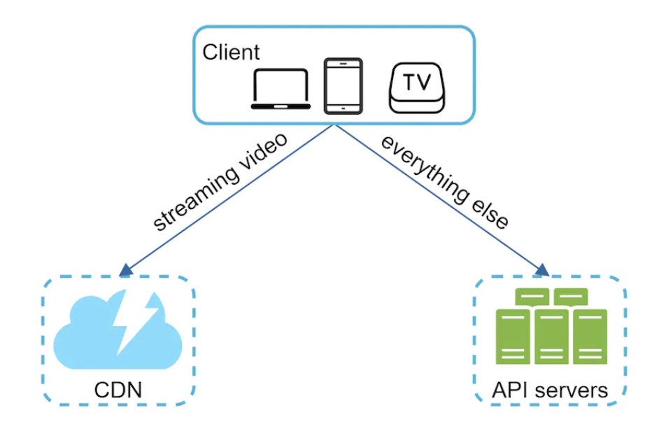 * Client - you can watch youtube on web, mobile and TV. * CDN - videos are stored in CDN. * API Servers - Everything else, except video streaming goes through the API servers. Feed recommendation, generating video URL, updating metadata db and cache, user signup.
Let's explore high-level design of video streaming and uploading.
Video uploading flow
 * Users watch videos on a supported client
* Load balancer evenly distributes requests across API servers
* All user requests go through API servers, except video streaming
* Metadata DB - sharded and replicated to meet performance and availability requirements
* Metadata cache - for better performance, video metadata and user objects are cached
* A blob storage system is used to store the actual videos
* Transcoding/encoding servers - transform videos to various formats (eg MPEG, HLS, etc) which are suitable for different devices and bandwidth
* Transcoded storage stores result files from transcoding
* Videos are cached in CDN - clicking play streams the video from CDN
* Completion queue - stores events about video transcoding results
* Completion handler - a set of workers which pull event data from completion queue and update metadata cache and database
* Users watch videos on a supported client
* Load balancer evenly distributes requests across API servers
* All user requests go through API servers, except video streaming
* Metadata DB - sharded and replicated to meet performance and availability requirements
* Metadata cache - for better performance, video metadata and user objects are cached
* A blob storage system is used to store the actual videos
* Transcoding/encoding servers - transform videos to various formats (eg MPEG, HLS, etc) which are suitable for different devices and bandwidth
* Transcoded storage stores result files from transcoding
* Videos are cached in CDN - clicking play streams the video from CDN
* Completion queue - stores events about video transcoding results
* Completion handler - a set of workers which pull event data from completion queue and update metadata cache and database
Let's now explore the flow of uploading videos and video metadata. Metadata includes info about video URL, size, resolution, format, etc.
Here's how the video uploading flow works:
* Videos are uploaded to original storage
* Transcoding servers fetch videos from storage and start transcoding
* Once transcoding is complete, two steps are executed in parallel:
* Transcoded videos are sent to transcoded storage and distributed to CDN
* Transcoding completion events are queued in completion queue, workers pick up the events and update metadata database & cache
* API servers inform user that uploading is complete
Here's how the metadata update flow works: 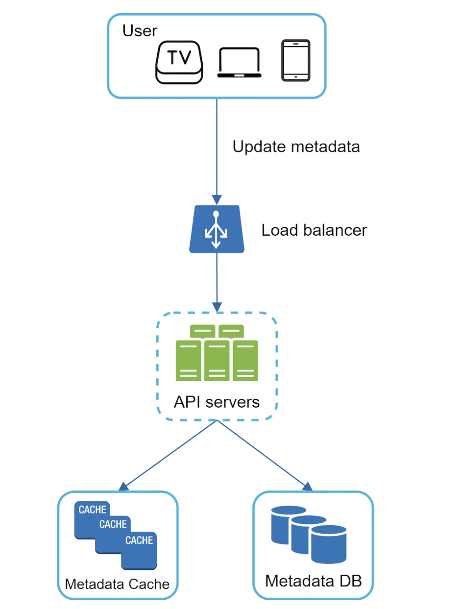 * While file is being uploaded, user sends a request to update the video metadata - file name, size, format, etc. * API servers update metadata database & cache
Video streaming flow
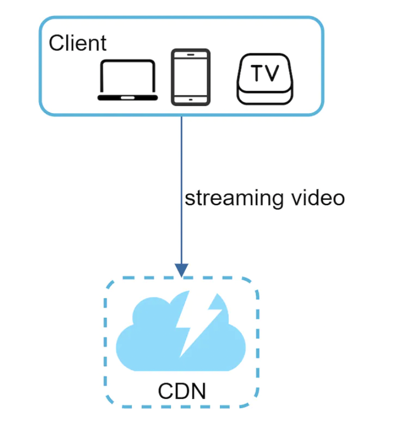
Whenever users watch videos on YouTube, they don't download the whole video at once. Instead, they download a little and start watching it while downloading the rest. This is referred to as streaming. Stream is served from closest CDN server for lowest latency.
Some popular streaming protocols: * MPEG-DASH - "Moving Picture Experts Group"-"Dynamic Adaptive Streaming over HTTP" * Apple HLS - "HTTP Live Streaming" * Microsoft Smooth Streaming * Adobe HTTP Dynamic Streaming (HDS)
You don't need to understand those protocols in detail. It is important to understand, though, that different streaming protocols support different video encodings and playback players.
We need to choose the right streaming protocol to support our use-case.
Step 3 - Design deep dive
In this part, we'll deep dive into the video uploading and video streaming flows.
Video transcoding
Video transcoding is important for a few reasons: * Raw video consumes a lot of storage space. * Many browsers have constraints on the type of videos they can support. It is important to encode a video for compatibility reasons. * To ensure good UX, you ought to serve HD videos to users with good network connection and lower-quality formats for the ones with slower connection. * Network conditions can change, especially on mobile. It is important to be able to automatically switch video formats at runtime for smooth UX.
Most transcoding formats consist of two parts: * Container - the basket which contains the video file. Recognized by the file extension, eg .avi, .mov, .mp4 * Codecs - Compression and decompression algorithms, which reduce video size while preserving quality. Most popular ones - H.264, VP9, HEVC.
Directed Acyclic Graph (DAG) model
Transcoding video is computationally expensive and time-consuming. In addition to that, different creators have different inputs - some provide thumbnails, others do not, some upload HD, others don't.
In order to support video processing pipelines, dev customisations, high parallelism, we adopt a DAG model: 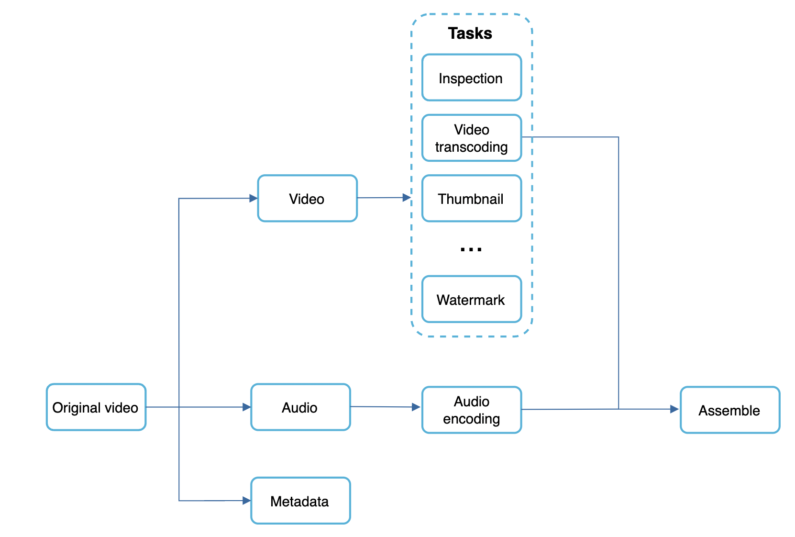
Some of the tasks applied on a video file: * Ensure video has good quality and is not malformed * Video is encoded to support different resolutions, codecs, bitrates, etc. * Thumbnail is automatically added if a user doesn't specify it. * Watermark - image overlay on video if specified by creator 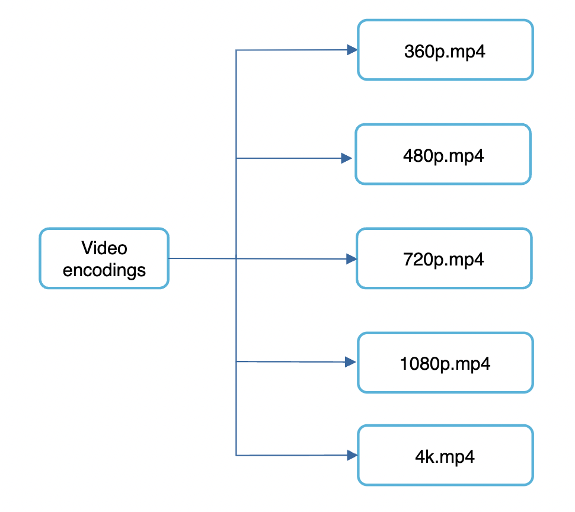
Video transcoding architecture

Preprocessor

The preprocessor's responsibilities: * Video splitting - video is split in group of pictures (GOP) alignment, ie arranged groups of chunks which can be played independently * Cache - intermediary steps are stored in persistent storage in order to retry on failure. * DAG generation - DAG is generated based on config files specified by programmers.
Example DAG configuration with two steps:

DAG Scheduler
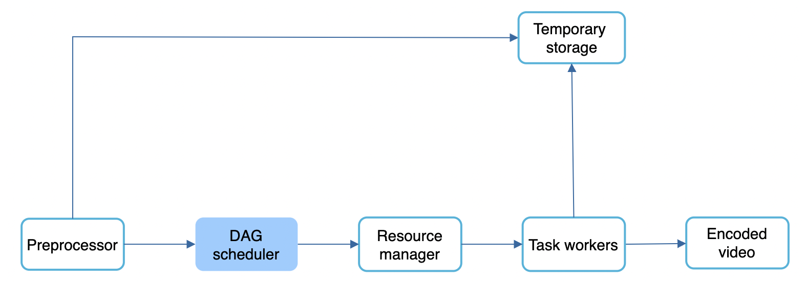
DAG scheduler splits a DAG into stages of tasks and puts them in a task queue, managed by a resource manager:

In this example, a video is split into video, audio and metadata stages which are processed in parallel.
Resource manager

Resource manager is responsible for optimizing resource allocation. 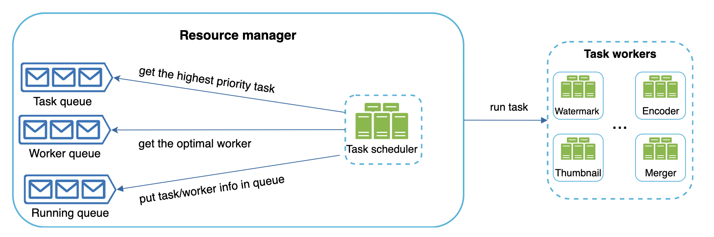 * Task queue is a priority queue of tasks to be executed * Worker queue is a queue of available workers and worker utilization info * Running queue contains info about currently running tasks and which workers they're assigned to
How it works: * task scheduler gets highest-priority task from queue * task scheduler gets optimal task worker to run the task * task scheduler instructs worker to start working on the task * task scheduler binds worker to task & puts task/worker info in running queue * task scheduler removes the job from the running queue once the job is done
Task workers
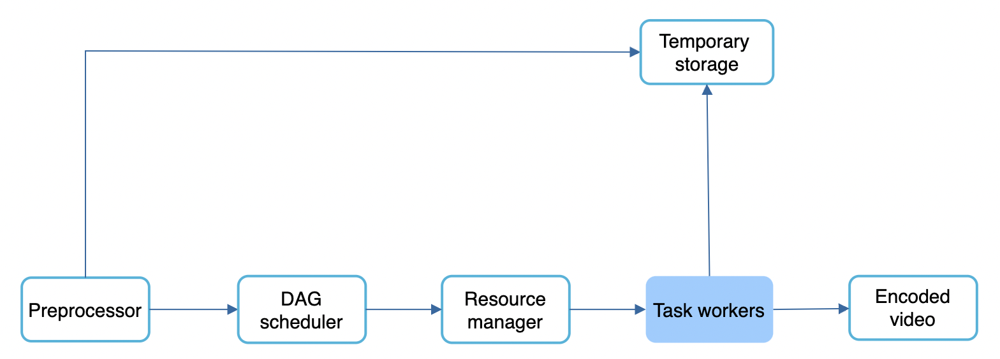
The workers execute the tasks in the DAG. Different workers are responsible for different tasks and can be scaled independently. 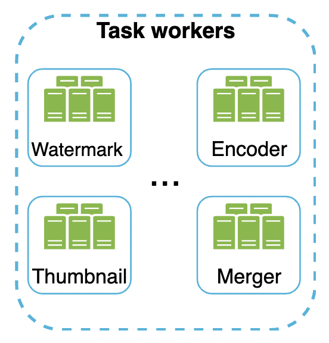
Temporary storage
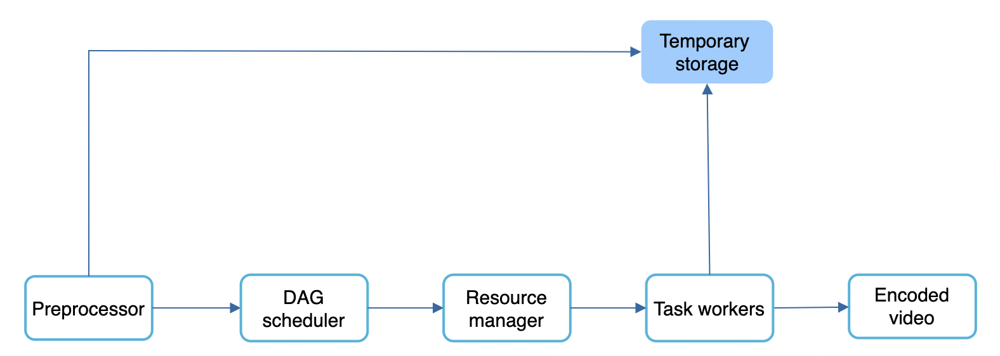
Multiple storage systems are used for different types of data. Eg temporary images/video/audio is put in blob storage. Metadata is put in an in-memory cache as data size is small.
Data is freed up once processing is complete.
Encoded video
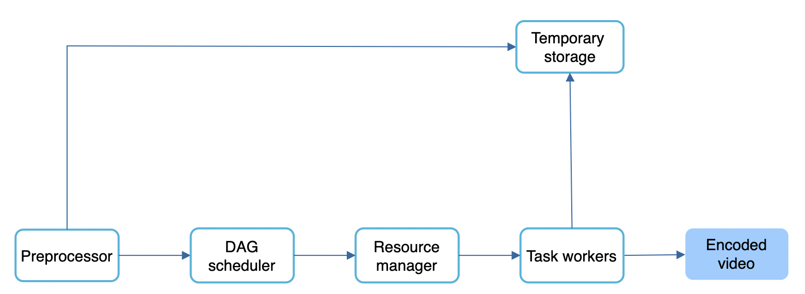
Final output of the DAG. Example output - funny_720p.mp4.
System Optimizations
Now it's time to introduce some optimizations for speed, safety, cost-saving.
Speed optimization - parallelize video uploading
We can split video uploading into separate units via GOP alignment: 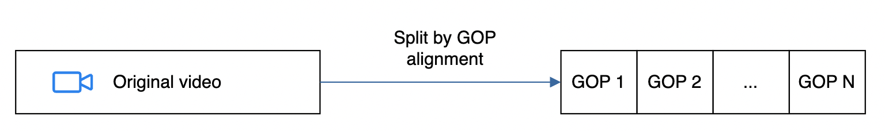
This enables fast resumable uploads if something goes wrong. Splitting the video file is done by the client.
Speed optimization - place upload centers close to users
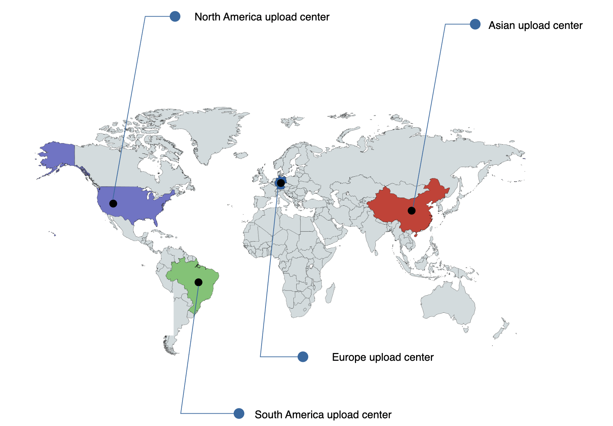
This can be achieved by leveraging CDNs.
Speed optimization - parallelism everywhere
We can build a loosely coupled system and enable high parallelism.
Currently, components rely on inputs from previous components in order to produce outputs: 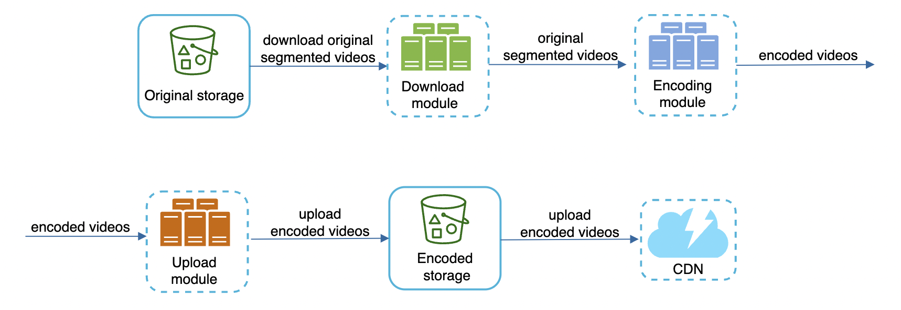
We can introduce message queues so that components can start doing their task independently of previous one once events are available: 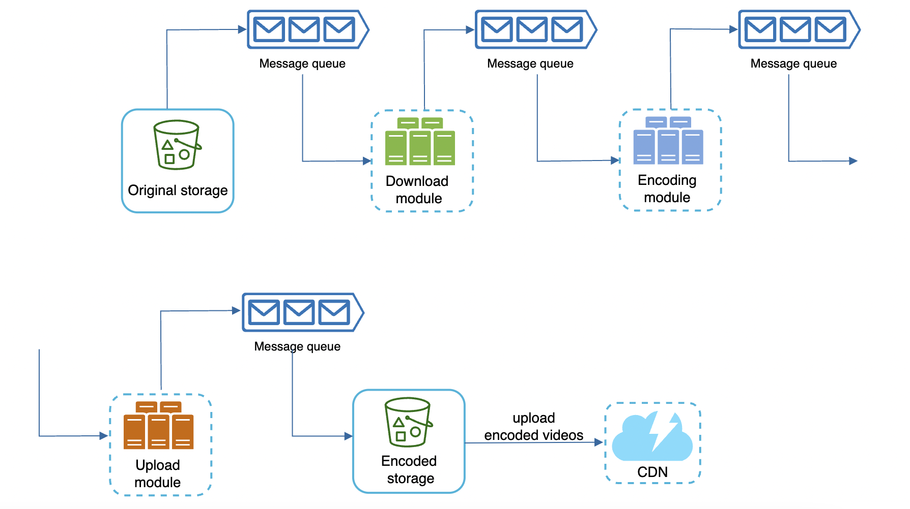
Safety optimization - pre-signed upload URL
To avoid unauthorized users from uploading videos, we introduce pre-signed upload URLs:

How it works: * client makes request to API server to fetch upload URL * API servers generate the URL and return it to the client * Client uploads the video using the URL
Safety optimization - protect your videos
To protect creators from having their original content stolen, we can introduce some safety options: * Digital right management (DRM) systems - Apple FairPlay, Google Widevine, Microsoft PlayReady * AES encryption - you can encrypt a video and configure an authorization policy. It is decrypted on playback. * Visual watermarking - image overlay on top of video which contains your identifying information, eg company name.
Cost-saving optimization
CDN is expensive, as we've seen in our back of the envelope estimation.
We can piggyback on the fact that video streams follow a long-tail distribution - ie a few popular videos are accessed frequently, but everything else is not.
Hence, we can store popular videos in CDN and serve everything else from high capacity storage servers:

Other cost-saving optimizations: * We might not need to store many encoded versions for less popular videos. Short videos can be encoded on-demand. * Some videos are only popular in certain regions. We can avoid distributing them in all regions. * Build your own CDN. Can make sense for large streaming companies like Netflix.
Error Handling
For a large-scale system, errors are unavoidable. To make a fault-tolerant system, we need to handle errors gracefully and recover from them.
There are two types of errors: * Recoverable error - can be mitigated by retrying a few times. If retrying fails, a proper error code is returned to the client. * Non-recoverable error - system stops running related tasks and returns proper error code to the client.
Other typical errors and their resolution: * Upload error - retry a few times * Split video error - entire video is passed to server if older clients don't support GOP alignment. * Transcoding error - retry * Preprocessor error - regenerate DAG * DAG scheduler error - retry scheduling * Resource manager queue down - use a replica * Task worker down - retry task on different worker * API server down - they're stateless so requests can be redirected to other servers * Metadata db/cache server down - replicate data across multiple nodes * Master is down - Promote one of the slaves to become master * Slave is down - If slave goes down, you can use another slave for reads and bring up another slave instance
Step 4 - Wrap up
Additional talking points: * Scaling the API layer - easy to scale horizontally as API layer is stateless * Scale the database - replication and sharding * Live streaming - our system is not designed for live streams, but it shares some similarities, eg uploading, encoding, streaming. Notable differences: * Live streaming has higher latency requirements so it might demand a different streaming protocol * Lower requirement for parallelism as small chunks of data are already processed in real time * different error handling, as there is a timeout after which we need to stop retrying * Video takedowns - videos that violate copyrights, pornography, any other illegal acts need to be removed either during upload flow or based on user flagging.